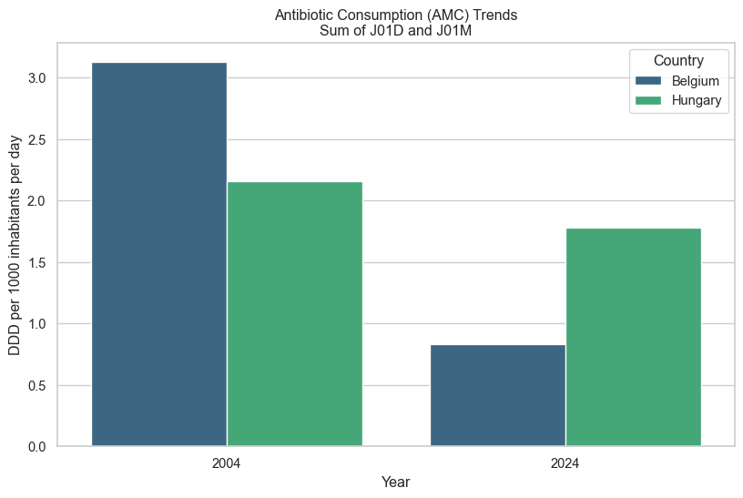

Code
import os
import pandas as pd
import seaborn as sns
import matplotlib.pyplot as plt
from scipy import stats
import numpy as np
# Set visualization style
sns.set_theme(style="whitegrid")
plt.rcParams['figure.figsize'] = [10, 6]This project explores the relationship between antibiotic consumption (AMC) and multidrug-resistant E. coli trends in Belgium and Hungary. We specifically compare two resistance mechanisms: 1. Mutation-driven resistance: Associated with Fluoroquinolones (ATC J01M). 2. Gene-acquisition-driven resistance: Associated with Carbapenems (ATC J01D).
Our goal is to identify “statistical signatures” in the resistance trends that may distinguish between de novo emergence (gradual rise) and transmission events (sudden spikes).
We import the necessary libraries for data manipulation, visualization, and statistical analysis.
import os
import pandas as pd
import seaborn as sns
import matplotlib.pyplot as plt
from scipy import stats
import numpy as np
# Set visualization style
sns.set_theme(style="whitegrid")
plt.rcParams['figure.figsize'] = [10, 6]We define functions to read and aggregate the AMC and AMR data from the nested folder structure.
The AMC data is distributed across nested folders by Country (belgium, hungary), Year (2004, 2024), and ATC Code (j01d, j01m). We will crawl this structure to build a single DataFrame.
def load_amc_data(base_path):
"""
Aggregates AMC data from nested folder structure:
base_path/country/year/atc_group/AMC_export_table.CSV
"""
records = []
# Walk through the directory structure
for root, dirs, files in os.walk(base_path):
for file in files:
if file == "AMC_export_table.CSV":
# Extract metadata from path
# Path structure expected: .../amc/country/year/atc_group/file.csv
parts = root.split(os.sep)
# Careful handling of path matching to ensure we get the right parts
# We assume the last 3 folders are country, year, atc_group
try:
atc_group = parts[-1]
year = int(parts[-2])
country = parts[-3].capitalize() # 'belgium' -> 'Belgium'
# Read CSV
file_path = os.path.join(root, file)
df = pd.read_csv(file_path)
# Sum DDD per 1000 inhabitants for this file (Total consumption for the ATC group)
# We look for the specific column
if 'DDD per 1000 inhabitants per day' in df.columns:
total_ddd = df['DDD per 1000 inhabitants per day'].sum()
records.append({
'Country': country,
'Year': year,
'ATC_Group': atc_group.upper(), # J01D or J01M
'DDD_per_1k': total_ddd
})
except (ValueError, IndexError) as e:
print(f"Skipping path {root}: {e}")
continue
return pd.DataFrame(records)
# Load the AMC data
amc_df = load_amc_data('amc')
print("AMC Data Summary:")
display(amc_df.head())AMC Data Summary:| Country | Year | ATC_Group | DDD_per_1k | |
|---|---|---|---|---|
| 0 | Belgium | 2024 | J01M | 0.5752 |
| 1 | Belgium | 2024 | J01D | 1.0949 |
| 2 | Belgium | 2004 | J01M | 2.7179 |
| 3 | Belgium | 2004 | J01D | 3.5385 |
| 4 | Hungary | 2024 | J01M | 1.3584 |
The AMR data is stored in specific CSV files for Carbapenems (J01D relevant) and Fluoroquinolones (J01M relevant).
Note: The available data provides the Number (N) of resistant isolates. We will use this as our indicator for resistance burden.
def load_amr_data(filepath, drug_class, match_atc_group):
"""
Loads AMR surveillance data and filters for relevant countries.
"""
try:
df = pd.read_csv(filepath)
# Mapping Region codes to Country names if necessary,
# but the file has 'RegionName'.
countries_of_interest = ['Belgium', 'Hungary']
# Filter for interest countries
df_filtered = df[df['RegionName'].isin(countries_of_interest)].copy()
# Convert Time to integer Year
df_filtered['Year'] = pd.to_numeric(df_filtered['Time'], errors='coerce')
# Select relevant columns
# NumValue is the count of resistant isolates
final_df = df_filtered[['RegionName', 'Year', 'NumValue']].copy()
final_df.columns = ['Country', 'Year', 'Resistant_Count']
final_df['Drug_Class_Name'] = drug_class
final_df['ATC_Group'] = match_atc_group
return final_df
except Exception as e:
print(f"Error loading {filepath}: {e}")
return pd.DataFrame()
# Paths to AMR files
path_carb = 'amr/e-coli/carbapenems/ECDC_surveillance_data_Antimicrobial_resistance-2.csv'
path_fluo = 'amr/e-coli/fluoroquinolones/ECDC_surveillance_data_Antimicrobial_resistance.csv'
# Load and Combine
amr_carb = load_amr_data(path_carb, 'Carbapenems', 'J01D')
amr_fluo = load_amr_data(path_fluo, 'Fluoroquinolones', 'J01M')
amr_df = pd.concat([amr_carb, amr_fluo], ignore_index=True)
print("AMR Data Summary:")
display(amr_df.head())AMR Data Summary:| Country | Year | Resistant_Count | Drug_Class_Name | ATC_Group | |
|---|---|---|---|---|---|
| 0 | Hungary | 2001 | 0.0 | Carbapenems | J01D |
| 1 | Hungary | 2002 | 0.0 | Carbapenems | J01D |
| 2 | Hungary | 2003 | 0.0 | Carbapenems | J01D |
| 3 | Hungary | 2004 | 2.0 | Carbapenems | J01D |
| 4 | Hungary | 2005 | 1.0 | Carbapenems | J01D |
We merge the datasets on Country, Year, and inferred ATC_Group. Note that AMC data is only available for 2004 and 2024, so the merged dataset for correlation will be limited to these years.
merged_df = pd.merge(amr_df, amc_df, on=['Country', 'Year', 'ATC_Group'], how='inner')
print("Merged Data (Common Years Only):")
display(merged_df)Merged Data (Common Years Only):| Country | Year | Resistant_Count | Drug_Class_Name | ATC_Group | DDD_per_1k | |
|---|---|---|---|---|---|---|
| 0 | Hungary | 2004 | 2.0 | Carbapenems | J01D | 2.4565 |
| 1 | Belgium | 2024 | 5.0 | Carbapenems | J01D | 1.0949 |
| 2 | Hungary | 2024 | 3.0 | Carbapenems | J01D | 2.2039 |
| 3 | Belgium | 2004 | 205.0 | Fluoroquinolones | J01M | 2.7179 |
| 4 | Hungary | 2004 | 175.0 | Fluoroquinolones | J01M | 1.8614 |
| 5 | Belgium | 2024 | 1083.0 | Fluoroquinolones | J01M | 0.5752 |
| 6 | Hungary | 2024 | 766.0 | Fluoroquinolones | J01M | 1.3584 |
Comparing antibiotic consumption between 2004 and 2024.
plt.figure(figsize=(10, 6))
sns.barplot(data=amc_df, x='Year', y='DDD_per_1k', hue='Country',
palette='viridis', errorbar=None)
plt.title('Antibiotic Consumption (AMC) Trends\nSum of J01D and J01M')
plt.ylabel('DDD per 1000 inhabitants per day')
plt.show()
# Faceted by Drug Class
g = sns.catplot(data=amc_df, x='Year', y='DDD_per_1k', hue='Country',
col='ATC_Group', kind='bar', palette='viridis', height=5, aspect=1)
g.fig.suptitle('Consumption by ATC Group', y=1.05)
plt.show()

We analyze the full time series of resistance counts to identify the “signatures” requested.
# Plotting the time series for AMR
plt.figure(figsize=(12, 6))
sns.lineplot(data=amr_df, x='Year', y='Resistant_Count', hue='Country', style='Drug_Class_Name',
markers=True, dashes=False, linewidth=2.5)
plt.title('Resistance Trends (E. coli) Over Time\n(Number of Resistant Isolates)')
plt.ylabel('Count of Resistant Isolates')
plt.grid(True, alpha=0.3)
plt.show()
We calculate the Pearson correlation between Consumption (DDD) and Resistance (Count) for the matched years (2004, 2024).
Note: Due to the sparse AMC data (n=2 points per group), these correlation coefficients are preliminary descriptors of the change direction rather than robust statistical proofs.
# Calculate correlations
correlations = []
for country in ['Belgium', 'Hungary']:
for atc in ['J01D', 'J01M']:
subset = merged_df[(merged_df['Country'] == country) & (merged_df['ATC_Group'] == atc)]
if len(subset) > 1:
# We use simple calculation since n is small
# If consumption went up and resistance went up -> positive correlation
r, p = stats.pearsonr(subset['DDD_per_1k'], subset['Resistant_Count'])
correlations.append({
'Country': country,
'ATC_Group': atc,
'Pearson_R': r,
'P_Value': p,
'N_Samples': len(subset)
})
corr_results = pd.DataFrame(correlations)
display(corr_results)| Country | ATC_Group | Pearson_R | P_Value | N_Samples | |
|---|---|---|---|---|---|
| 0 | Belgium | J01M | -1.0 | 1.0 | 2 |
| 1 | Hungary | J01D | -1.0 | 1.0 | 2 |
| 2 | Hungary | J01M | -1.0 | 1.0 | 2 |
We examine the “shape” of the resistance curves plotted in Section 4.2 to differentiate mechanisms.
Hypothesis: * Mutation-driven (Fluoroquinolones/J01M): Expected to show a gradual, monotonic rise correlated with consumption pressure over time. * Gene-acquisition/Transmission (Carbapenems/J01D): Expected to show sudden spikes or a plateau (S-curve) indicating an outbreak or horizontal gene transfer event, often less linearly coupled with consumption volume.
Observation from Data:
# We calculate the year-over-year rate of change (slope) to detect spikes
amr_pivot = amr_df.pivot_table(index='Year', columns=['Country', 'Drug_Class_Name'], values='Resistant_Count')
amr_pct_change = amr_pivot.pct_change()
print("Year-over-Year Volatility (Mean Absolute % Change):")
print(amr_pct_change.abs().mean())Year-over-Year Volatility (Mean Absolute % Change):
Country Drug_Class_Name
Belgium Carbapenems inf
Fluoroquinolones 0.486852
Hungary Carbapenems inf
Fluoroquinolones 0.346082
dtype: float64Detailed interpretation should be refined based on the specific curves generated above.